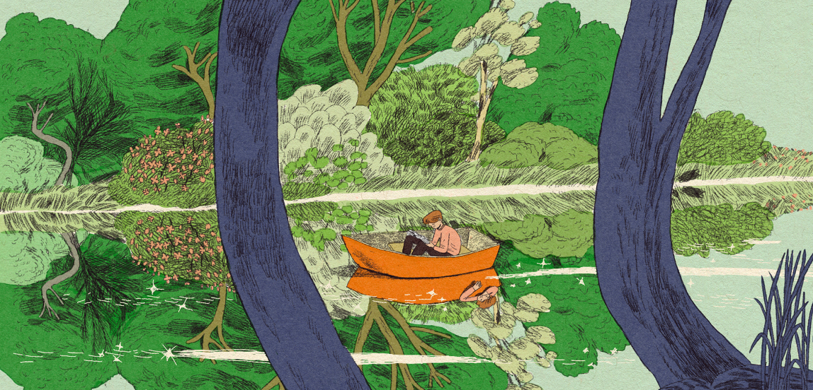
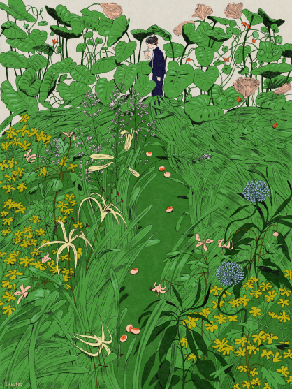
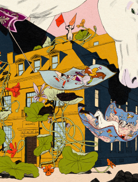
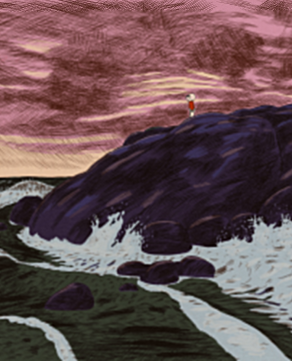
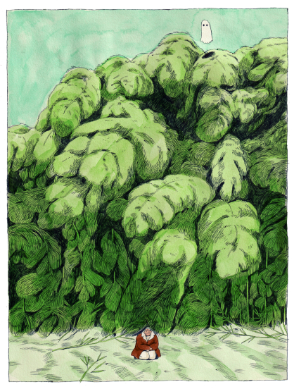

Karlotta Freier is a Brooklyn-based artist who graduated from the MFA Illustration as Visual Essay program at the School of Visual Arts in 2021. Besides her creative pursuits, she shares her knowledge by teaching illustration at the China Academy of Art and as a guest speaker at universities across the United States. Her work has been exhibited in various solo and group exhibitions and festivals around the world.


